"Instrucción para descubrir todas las guacas del Pirú y sus camayos y haziendas" [ca 1581-1585] en Henrique Urbano y Pierre Duviols (eds.). Relación de las fábulas y ritos de los Incas, Historia 16. Madrid, 1989.
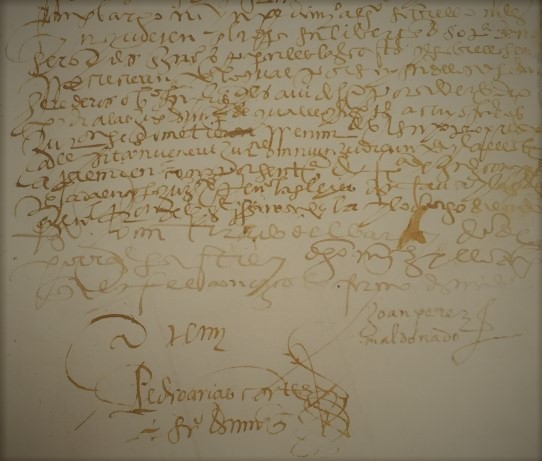De las costumbres y conversión de los indios del Perú: Memorial a Felipe II [1588]. Madrid, Polifemo, 1998.
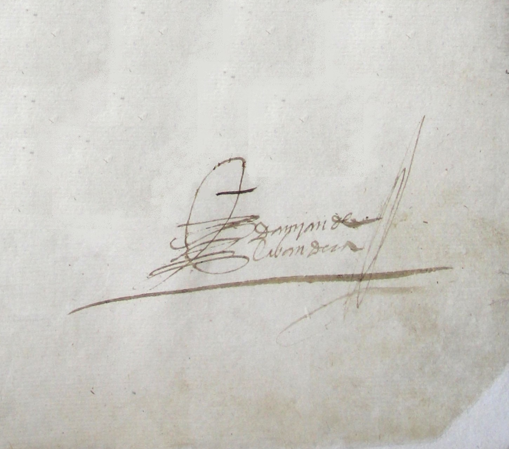"Relación general de la disposición y calidad de la provincia de Guamanga, llamada San Joan de l frontera y de la vivienda y costumbres de los naturales della-año de 1557", en José Urbano Martínez Carreras (ed.). Relaciones Geográficas del Indias- Perú por Don Marco Jiménez de la Espada, vol I, pp.176-180. Madrid, Atlas, 1965.
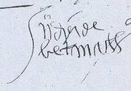Juan de Betanzos y el Tahuantinsuyo: Nueva edición de la Suma y narración de los Incas. Hernández, A. F. y Cerrón-Palomino, R. (eds.). Lima, Fondo Editorial Pontificia Universidad Católica del Perú, 2015.
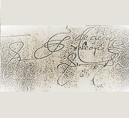Francesca Cantù (ed.). Crónica del Perú. Segunda Parte, El señorío de los Yngas. Lima, Fondo Editorial Pontificia Universidad Católica del Perú, 1985.

"La relación que hizo el señor capitán Hernando Pizarro por mandado del señor Gobernador, su hermo, desde el pueblo de Caxamalca a Pachacamac y de allí a Jauja, por Miguel Estete" en Horacio H. Urteaga (ed.). Las Relaciones dela Conquista del Perú por Francisco de Jerez y Pedro Sancho, pp.77-102. Lima, San Martí, 1917.
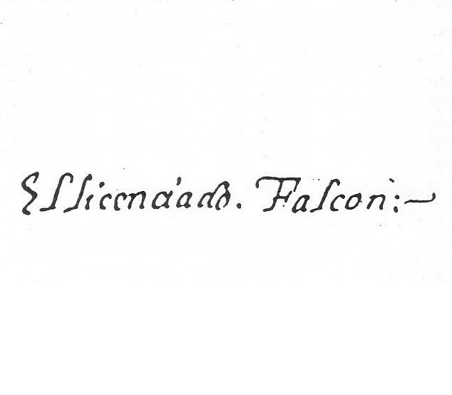"Representación hecha por el Licenciado Falcón en Concilio Provincial sobre los daños y molestias que se hacen a los indios", en Francisco A. Loayza (ed.). Los pequeños grandes libros de historia americana, Serie I, Tomo X. Lima, 1946.
Josep M. Barnadas (ed.). Descripción del Perú (1551 / 1553). Cuzco, Centro de Estudios Regionales Andinos "Bartolomé de Las Casas", 1998.
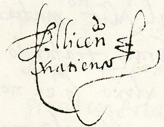G. Lohmann Villena (ed.) en Gobierno del Perú con todas las cosas pertenecientes a él y a su historia, [1567], Tomo XI. París Lima, IFEA, 1967.

"Relación de las fábulas y ritos de los Ingas”en Henrique Urbano y Pierra Duviols (eds.). Fábulas y mitos de los incas. Historia 16. Madrid, 1989.
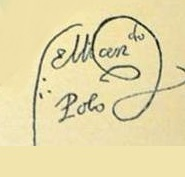Notables daños de no guardar a los yndios sus fueros... [1571] (El mundo de los incas) en Laura González y Alicia Alonso (eds.). Historia 16. Madrid, 1990.
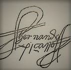“Carta de Hernando Pizarro a la Audiencia de Santo Domingo. A los magníficos señores los señores oidores de la Audiencia Real de Su Magestad que residen en la ciudad de Sancto Domingo” en Biblioteca Peruana, Primera Serie, Tomo I, pp.117-132. LIma, Editores Técnicos Asociados, 1968.
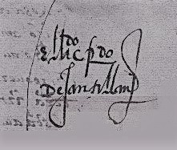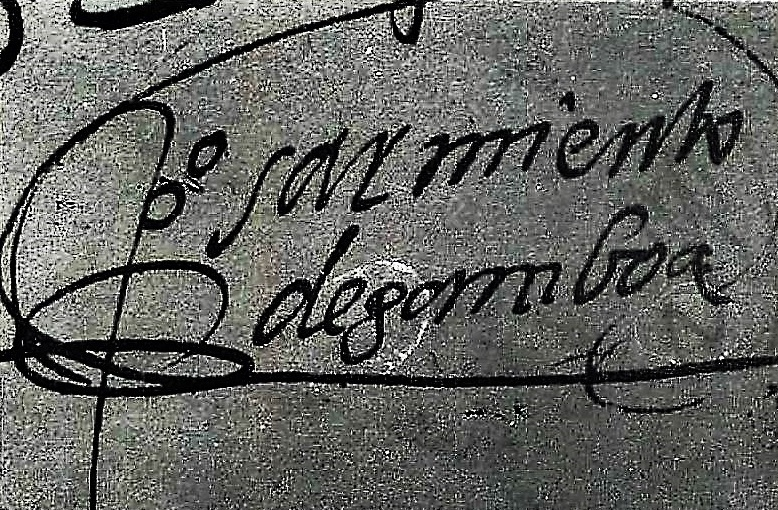
Historia de los Incas. Madrid, Miraguano Ediciones, 1988.
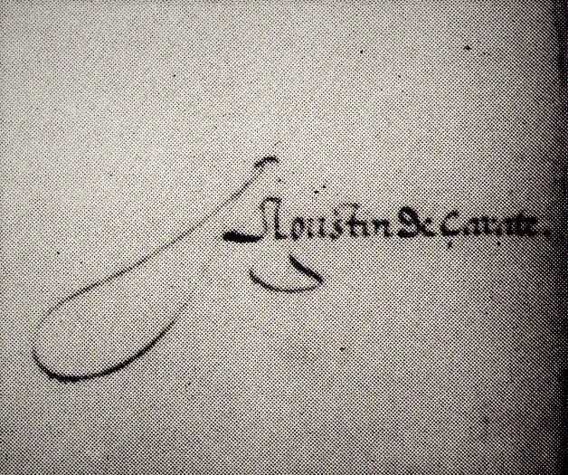Historia del descubrimiento y conquista del Perú. Lima, Fondo Editorial Pontificia Universidad Católica del Perú, 1995.